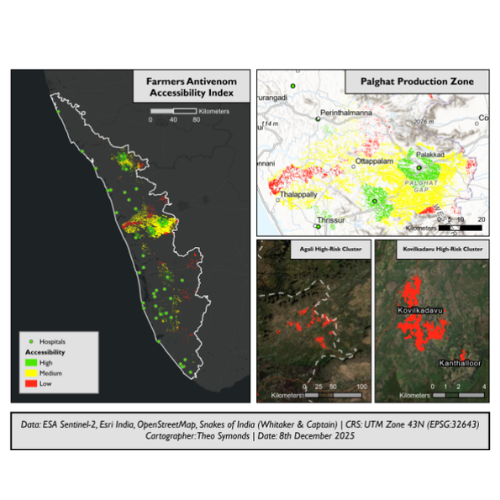
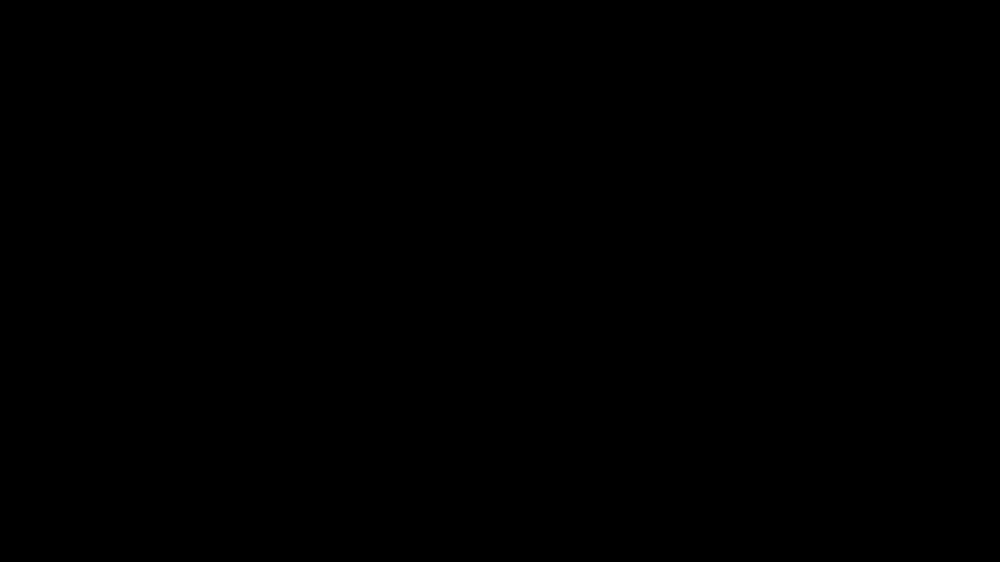
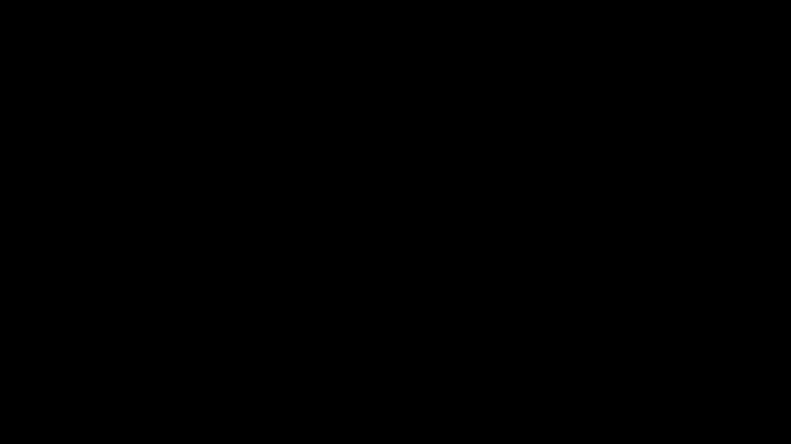
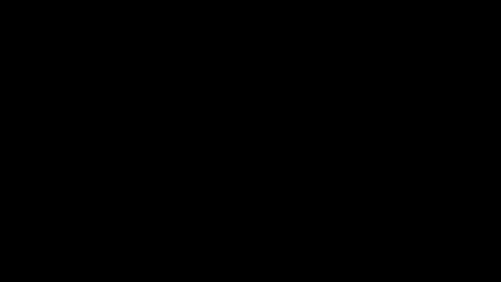
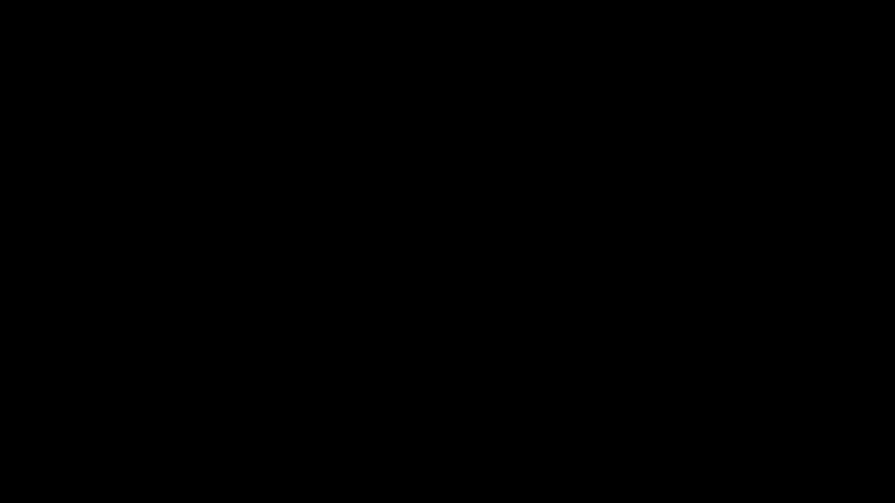
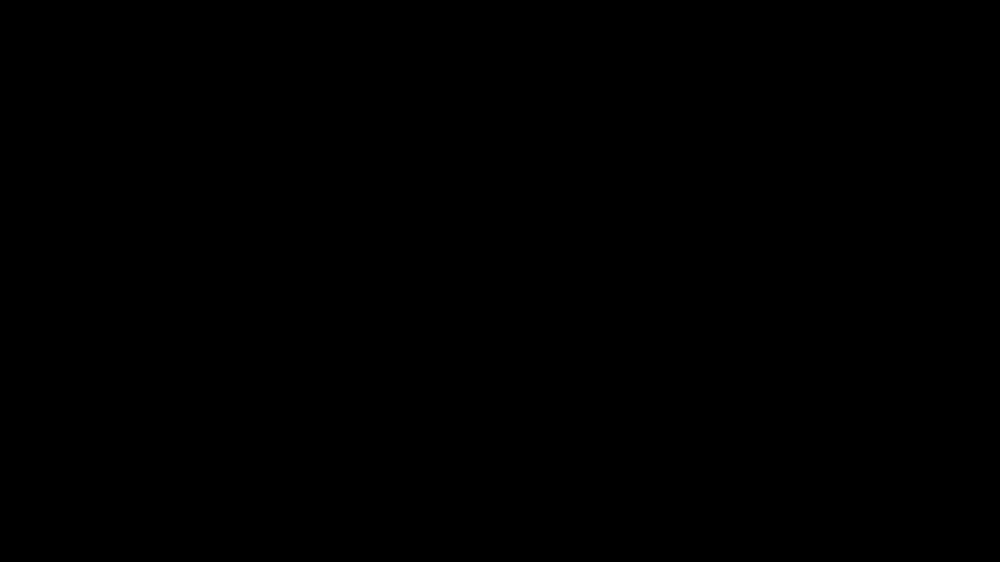
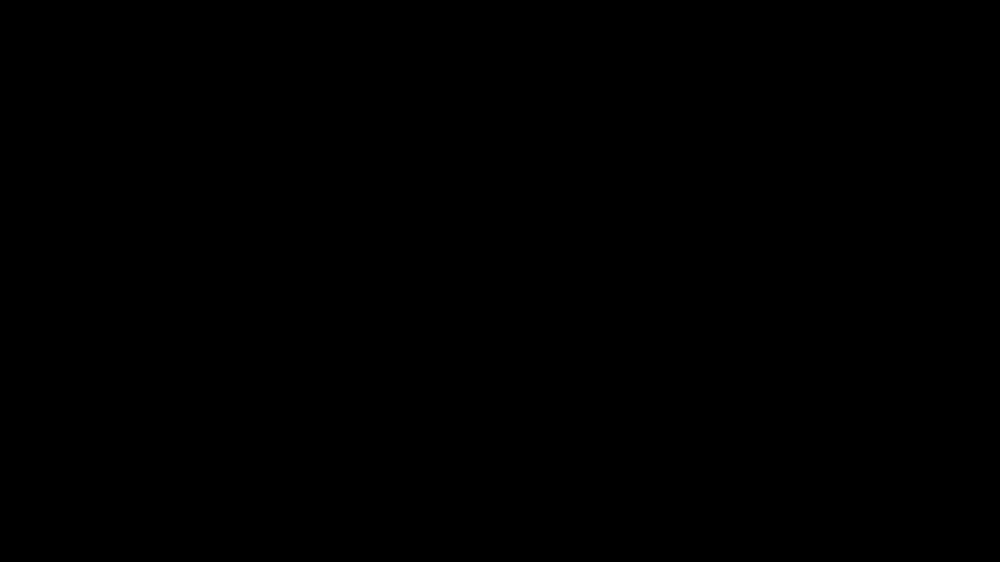
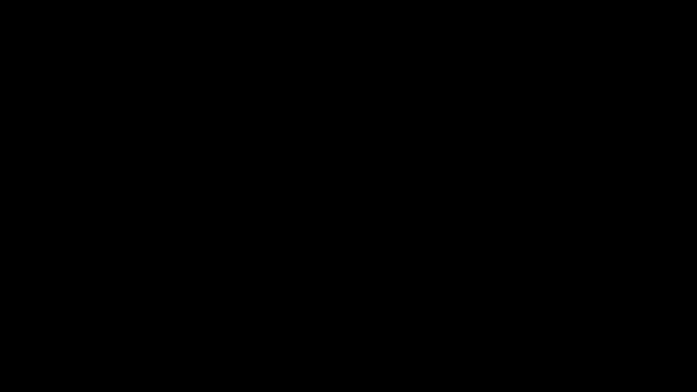
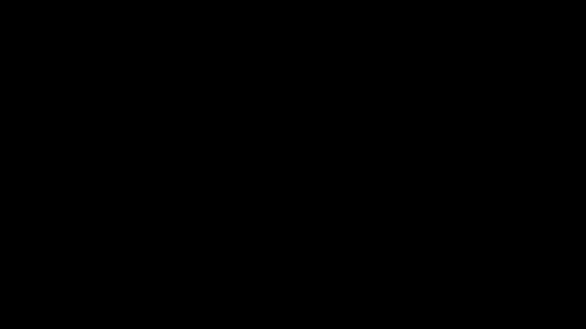

Cartography | Coding | Geographic Information Systems
Projects

SAR Ship Detection

Snakebite Antivenom Access in India

Paris Transportation Deserts

Madagascar Orographic Effect

River Float Time Calculator

Wine Quality Predictor

Mushroom Foraging Geotool

Avalanche Tree Loss Detection

Northern Ireland Spatial Story

Missoula Ordinance Dashboard

Mozambique HIV Prevalence
UMT Campus 3D Model